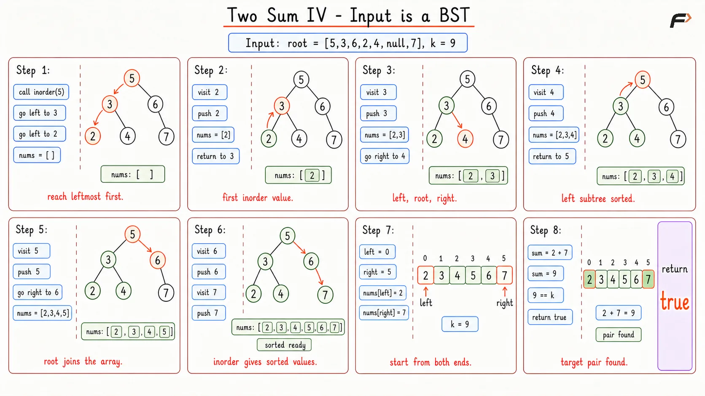
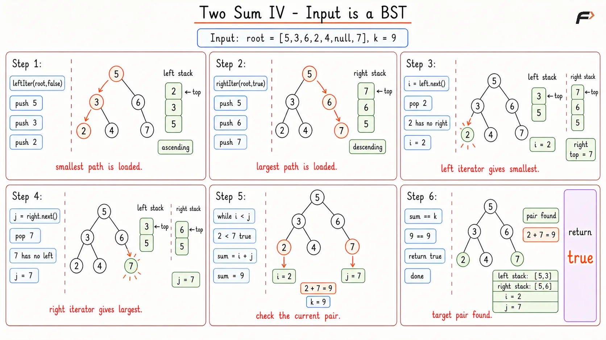

Two Sum in a BST: Find a Pair with a Given Sum
In the Two Sum IV - Input is a BST problem, you are given the root node of a binary search tree and an integer target k. Your task is to determine if there are any two distinct nodes within the tree whose values add up exactly to the target k. Return true if such a pair exists, and false if no such pair can be found anywhere in the tree.
Example 1
Input: root = [5, 3, 6, 2, 4, null, 7], k = 9
Output: true
Explanation: The tree contains the values 5, 3, 6, 2, 4, and 7. If we take the node with value 3 and the node with value 6, their sum is exactly 9. Because a valid pair exists, the result is true.
Example 2
Input: root = [5, 3, 6, 2, 4, null, 7], k = 28
Output: false
Explanation: The tree contains the same values. However, even if we add the two absolute largest numbers in the tree together (6 + 7), the maximum possible sum is 13. It is physically impossible to reach the target of 28, so the result is false.
Brute Force Approach
Finding two matching numbers is much easier when all the numbers are lined up in order from smallest to largest. A binary search tree is naturally sorted, but the numbers are spread out across hierarchical branches. By performing a standard inorder traversal, we can extract every single number and place it into a flat, perfectly sorted list. Once we have this sorted list, we can place one pointer at the smallest number and another pointer at the largest number. If their sum is too big, we move the larger pointer down. If their sum is too small, we move the smaller pointer up. If you want to understand this in detail, check our guide on the Two Pointer Technique.
Algorithm
Create an empty dynamic array to hold our extracted numbers.
Write a recursive helper function to perform an inorder traversal (visit left child, visit root, visit right child) and push each value into the array.
Call the helper function on the root of the tree.
Set a
leftpointer to the first index of the array (0) and arightpointer to the last index of the array.Start a loop that continues as long as
leftis strictly less thanright.Calculate the sum of the numbers at the
leftandrightpointers.If the sum exactly matches the target
k, return true immediately.If the sum is strictly less than the target, increment the
leftpointer to increase the total sum.If the sum is strictly greater than the target, decrement the
rightpointer to decrease the total sum.If the loop breaks without finding a match, return false.
Dry Run

Two Sum 4 Brute Dry Run
Solution
#include <bits/stdc++.h>
using namespace std;
// Definition for a binary tree node
struct TreeNode {
int val;
TreeNode *left;
TreeNode *right;
TreeNode(int x) : val(x), left(nullptr), right(nullptr) {}
};
class Solution {
private:
// Helper function to extract tree values in strictly increasing order
void inorder(TreeNode* root, vector<int>& nums) {
// Base case: stop if the node is empty
if (root == nullptr) {
return;
}
// Traverse the left side completely
inorder(root->left, nums);
// Store the current node's value
nums.push_back(root->val);
// Traverse the right side completely
inorder(root->right, nums);
}
public:
/*
Main function to find the target sum using an array and two pointers
*/
bool findTarget(TreeNode* root, int k) {
vector<int> nums;
// Flatten the BST into a sorted array
inorder(root, nums);
// Initialize pointers at the extreme ends of the array
int left = 0;
int right = nums.size() - 1;
// Loop to check pairs until the pointers cross
while (left < right) {
int currentSum = nums[left] + nums[right];
// If the exact target is found, return true
if (currentSum == k) {
return true;
}
// If the sum is too small, move to a larger number on the left
if (currentSum < k) {
left++;
}
// If the sum is too large, move to a smaller number on the right
else {
right--;
}
}
// No valid pairs exist
return false;
}
};
// Driver code starts here
int main() {
// Construct the sample tree: [5, 3, 6, 2, 4, null, 7]
TreeNode* root = new TreeNode(5);
root->left = new TreeNode(3);
root->right = new TreeNode(6);
root->left->left = new TreeNode(2);
root->left->right = new TreeNode(4);
root->right->right = new TreeNode(7);
Solution obj;
int k = 9;
// Check if the target exists
bool result = obj.findTarget(root, k);
cout << (result ? "true" : "false") << endl;
return 0;
}Complexity Analysis
Time Complexity: O(N), where N is the total number of nodes. We visit every node once during the inorder traversal, and the two-pointer loop takes at most N steps.
Space Complexity: O(N), because we store all the node values in an entirely separate array structure, consuming memory proportional to the size of the tree.
Optimal Approach
Extracting everything into an array takes unnecessary RAM. If the tree contains millions of elements, we create an array of millions of elements, even if the target numbers are the very first two numbers we check. We can drastically improve our memory usage by using customized iterators that walk through the tree one step at a time, calculating the sums on the fly. If you want to understand this in detail, check our guide on the Binary Search Tree Iterator.
Consider two explorers navigating a mountain range. One explorer starts at the absolute lowest valley and only walks upward. The second explorer starts at the highest peak and only walks downward. They pause at every checkpoint and communicate their combined altitude via radio. If the total altitude is too low, the bottom explorer climbs one checkpoint higher. If the total is too high, the top explorer climbs one checkpoint lower. They use a breadcrumb trail (a stack) to remember their paths without mapping the entire mountain range at once.
Algorithm
Create a custom
BSTIteratorclass. It should accept a boolean flagreverse. Ifreverseis false, it behaves like a normal in-order iterator (yielding smallest to largest). Ifreverseis true, it behaves as a reverse in-order iterator (yielding largest to smallest).Inside the main solution, instantiate two iterators:
leftIter(normal) andrightIter(reverse).Retrieve the first elements from both iterators:
ifromleftIterandjfromrightIter.Loop while
iis strictly less thanj.Check the sum of
iandj. If it matchesk, return true.If the sum is strictly less than
k, move the left explorer forward by callingnext()onleftIterand updatingi.If the sum is strictly greater than
k, move the right explorer backward by callingnext()onrightIterand updatingj.Return false if the iterators cross paths without finding a match.
Dry Run

Two Sum 4 Optimal Dry Run
Solution
#include <bits/stdc++.h>
using namespace std;
// Definition for a binary tree node
struct TreeNode {
int val;
TreeNode *left;
TreeNode *right;
TreeNode(int x) : val(x), left(nullptr), right(nullptr) {}
};
/*
Custom iterator class that can traverse the tree from smallest to largest
or from largest to smallest, depending on the initialization flag
*/
class BSTIterator {
private:
stack<TreeNode*> st;
// true = descending, false = ascending
bool reverse;
// Helper function to push all boundary nodes onto the stack
void pushAll(TreeNode* node) {
while (node != nullptr) {
st.push(node);
// If traversing backwards, load right children. Otherwise, load left children.
if (reverse == true) {
node = node->right;
} else {
node = node->left;
}
}
}
public:
// Constructor initializes the appropriate path
BSTIterator(TreeNode* root, bool isReverse) {
reverse = isReverse;
pushAll(root);
}
// Retrieves the next target element in the sequence
int next() {
TreeNode* topNode = st.top();
st.pop();
// If traversing backwards, look left for the next smaller element
if (reverse == true) {
pushAll(topNode->left);
}
// If traversing forwards, look right for the next larger element
else {
pushAll(topNode->right);
}
return topNode->val;
}
};
class Solution {
public:
/*
Main function linking the forward and reverse iterators
to simulate the optimal two-pointer array technique
*/
bool findTarget(TreeNode* root, int k) {
// Guard clause for empty trees
if (root == nullptr) return false;
// Initialize one iterator at the minimum and one at the maximum
BSTIterator leftIter(root, false);
BSTIterator rightIter(root, true);
int i = leftIter.next();
int j = rightIter.next();
// Loop until the iterators cross each other
while (i < j) {
int currentSum = i + j;
// The exact sum is found
if (currentSum == k) {
return true;
}
// Sum is too small, advance the left iterator
if (currentSum < k) {
i = leftIter.next();
}
// Sum is too large, advance the right iterator
else {
j = rightIter.next();
}
}
return false;
}
};
// Driver code starts here
int main() {
// Construct the sample tree: [5, 3, 6, 2, 4, null, 7]
TreeNode* root = new TreeNode(5);
root->left = new TreeNode(3);
root->right = new TreeNode(6);
root->left->left = new TreeNode(2);
root->left->right = new TreeNode(4);
root->right->right = new TreeNode(7);
Solution obj;
int k = 9;
// Check if the target exists
bool result = obj.findTarget(root, k);
cout << (result ? "true" : "false") << endl;
return 0;
}Complexity Analysis
Time Complexity: O(N), where N is the total number of nodes in the tree. Although we jump around the tree dynamically, every node is pushed and popped from our stacks at most once. The amortized cost remains completely linear.
Space Complexity: O(H) * 2, where H is the height of the tree. The two custom stacks only hold nodes mapping a single vertical path at any given time. For perfectly balanced trees, this is highly efficient memory usage.
Interview follow-up Questions
You absolutely can! Another valid approach is traversing the tree and using a HashSet to store visited numbers, checking if (k - root.val) exists in the set. However, the Two Pointer / BST Iterator approach demonstrates mastery over the specific sorted structure of a Binary Search Tree, whereas a HashSet approach is generic and treats the tree just like a normal unsorted array.